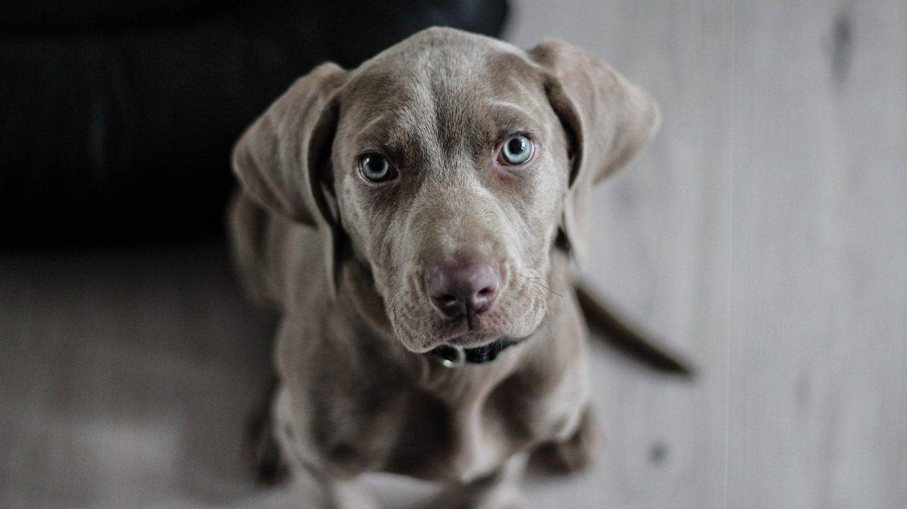
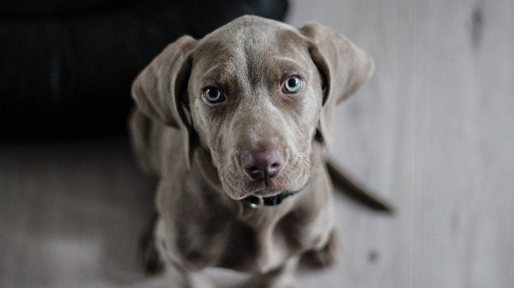

|
El funcionamiento básico de nuestra guardería de día canina es muy similar a una guardería para niños, dejas a tu mascota por la mañana con nuestros cuidadores de perros en Madrid cerca de un lugar donde puede jugar, socializarse con otros de su especie, hacer ejercicio.
|
Es un gran antídoto contra el aburrimiento y la soledad para aquellos perros cuyos dueños están muy ocupados. Podrás dejar de pensar que tu perro está solo en casa y no tener sentimiento de culpa por no poder dedicarle más tiempo, mientras está en nuestra guardería para perros en Madrid.
|


 
